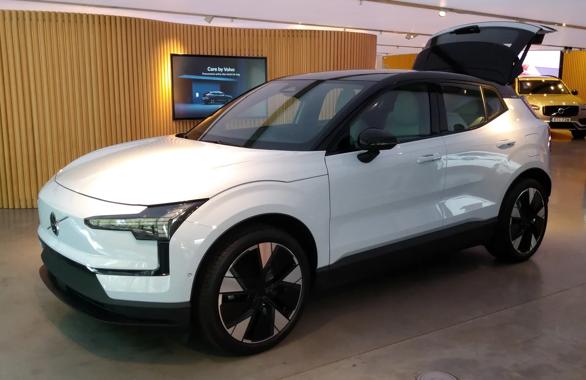

▲ 볼보의 소형 전기 SUV EX30 — 2026년 2월 가격 인하로 세제 혜택 적용 시 코어 트림이 3,991만원까지 내려왔다
수입 전기 SUV가 국산 전기차보다 싸다면 믿을 수 있을까. 볼보코리아가 2026년 2월 EX30 가격을 또 한 번 내리면서 이 질문이 현실이 됐다.
2025년 2월 국내 출고를 시작할 때만 해도 EX30 코어는 4,945만원, 울트라는 5,516만원이었다. 1년여 만에 코어는 761만원, 울트라는 700만원 내렸다. 여기에 전기차 보조금까지 더하면 실구매가는 3천만원대 후반까지 떨어진다. 볼보가 왜 이렇게까지 가격을 낮췄는지, 그 값에 실제로 무엇을 담았는지 트림별로 짚었다.
1. 볼보는 왜 EX30 가격을 또 내렸나
EX30은 2023년 11월 처음 공개될 때부터 '가장 저렴한 볼보'를 표방한 모델이다. 그런데도 국내 출고 초기 가격은 코어 4,945만원, 울트라 5,516만원으로 5천만원 안팎이었다. 유럽·미국 시장 대비 낮은 편이었지만, 국내 소비자들이 기대한 '3천만원대 볼보'와는 거리가 있었다.
2026년 2월 단행된 가격 인하는 이 간극을 좁히려는 시도로 풀이된다. 모터그래프 등 국내 매체는 EX30이 세금 혜택을 반영하면 4천만원 초중반대로 내려갈 것이라 예상했는데, 실제 인하 폭은 이보다 더 커서 코어 트림은 3천만원대 진입에 성공했다. 국산 준중형 전기 SUV와 견줄 만한 가격표가 나온 셈이다.

▲ 측면에서 본 EX30 — 전장 4,234mm에 불과한 볼보 현행 라인업 중 가장 작은 차체다 ⓒ Wikimedia Commons (Herranderssvensson, CC BY-SA 3.0)
2. 트림별 가격과 보조금 — 실구매가는 얼마
국내 판매 트림은 EX30 코어, EX30 울트라, EX30 크로스컨트리 울트라 세 가지다. 크로스컨트리는 지상고를 높이고 듀얼모터를 얹은 상위 파생 모델로 이해하면 된다.
| 트림 | 가격 | 인하 폭 |
|---|---|---|
| EX30 코어 | 3,991만원 | 761만원↓ |
| EX30 울트라 | 4,479만원 | 700만원↓ |
| EX30 크로스컨트리 울트라 | 4,812만원 | 700만원↓ |
여기에 전기차 보조금까지 더해지면 실구매가는 더 내려간다. 코어·울트라 모두 차량 가액이 5,500만원 미만이라 보조금 100% 지급 대상에 해당한다.
| 트림 | 국고 보조금 | 지자체 포함 총 보조금 | 예상 실구매가 |
|---|---|---|---|
| EX30 코어 | 약 247만원 | 약 321만원 | 약 3,670만원대 |
| EX30 울트라 | - | - | 약 4,158만원대 |
| EX30 크로스컨트리 울트라 | - | - | 약 4,524만원대 |
📍 보조금은 지역·시점마다 달라진다
전기차 보조금은 지자체별 예산과 소진 속도에 따라 금액이 다르고, 연도별로도 개편된다. 위 수치는 서울시 기준 예시이며, 실제 구매 시점의 정확한 보조금은 거주 지역 지자체 공고와 볼보 공식 딜러를 통해 확인하는 것이 안전하다.
트림별 세부 옵션과 실시간 가격은 볼보카코리아 공식 페이지에서 확인할 수 있다. 볼보 EX30 공식 페이지 바로가기
3. 배터리·주행거리·성능 — 싱글모터냐 듀얼모터냐
EX30은 배터리와 모터 구성에 따라 성격이 확연히 갈린다. 코어·울트라는 싱글모터 사양을 공유하지만 배터리 용량이 다르고, 크로스컨트리 울트라는 듀얼모터로 완전히 다른 가속감을 낸다.
| 항목 | 싱글모터(코어) | 싱글모터 롱레인지(울트라) | 듀얼모터(크로스컨트리 울트라) |
|---|---|---|---|
| 배터리 | 51kWh LFP | 69kWh NMC | 69kWh NMC |
| 모터 출력 | 272마력 | 428마력 | |
| WLTP 주행거리 | 약 344km | 약 475km | 약 460km |
| 제로백 | 5.3초 | 3.6~3.7초 | |
모터그래프가 짚었듯, EX30 싱글모터의 제로백 5.3초는 동급 경쟁 모델의 8초대와 비교하면 눈에 띄게 빠른 수치다. 듀얼모터인 크로스컨트리 울트라는 3.6~3.7초로, 소형 SUV치고는 이례적인 가속력을 보여준다. 다만 국내 인증 주행거리는 유럽 WLTP 기준보다 통상 낮게 나오는 경향이 있어, 실사용 시에는 표기 수치보다 다소 짧은 거리를 기준으로 충전 계획을 세우는 것이 현실적이다.

▲ EX30 후면부 — 크로스컨트리 울트라는 듀얼모터 428마력으로 제로백 3.6~3.7초를 낸다
4. 디자인과 실내 — 북유럽 감성에 구글 안드로이드를 얹다
차체 크기는 전장 4,234mm · 전폭 1,836mm · 전고 1,550mm · 휠베이스 2,650mm로, 볼보 현행 라인업 중 가장 작다. 작은 차체지만 볼보 특유의 절제된 면 처리와 토르 망치 모양 헤드램프 그래픽은 그대로 이어받았다.
실내는 12.3인치 세로형 디스플레이가 중심을 잡고 있고, 인포테인먼트는 구글의 Android 운영체제 기반으로 구동된다. 최근 연식 변경에서는 하베스트(스칸디나비아 여름 저녁 감성의 밝은 톤)와 블랙(짙은 검정에 노르디코 원단·아마 장식) 두 가지 인테리어 테마가 추가됐고, 외장 색상은 오닉스 블랙·베이퍼 그레이·크리스탈 화이트 등에서 고를 수 있다. 편의사양 역시 360도 서라운드뷰 카메라, 자동주차 등 동급에서 우수하다는 평가를 받는다.

▲ EX30 실내 — 세로형 12.3인치 디스플레이가 중심을 잡고, 인포테인먼트는 구글 Android 운영체제로 구동된다
✅ EX30 안전·편의사양 특징
· 360도 서라운드뷰 카메라와 자동주차 지원 — 동급 대비 우수한 구성이라는 평가
· 볼보 특유의 완성도 높은 기본 안전사양(운전자 보조 시스템 등)이 입문 트림부터 포함
· V2L(비히클투로드) 기능은 OTA 업데이트를 통해 기존 판매 차량에도 순차 지원 예정
· 실내 원단·트림은 가죽을 배제한 지속가능 소재 중심으로 구성
5. 모델Y·EQA·Q4 e-트론과 비교하면
모터그래프는 EX30을 테슬라 모델Y RWD, 벤츠 EQA, 아우디 Q4 e-트론과 나란히 놓고 비교했다. 네 모델 모두 각 브랜드의 입문형 전기 SUV라는 공통점이 있다.
📍 비교에서 드러난 EX30의 차별점
가속 성능: 싱글모터 기준 제로백 5.3초로, 8초대에 머무는 경쟁 모델들보다 확연히 빠르다.
가격 포지션: 세제 혜택과 보조금을 더하면 국내에서 가장 저렴한 축에 드는 수입 전기차로 꼽힌다.
편의·안전 사양: 360도 카메라, 자동주차 등이 동급에서 우수한 구성으로 평가된다.
모터그래프는 이런 조합을 두고 "국산 전기차 소비자까지 끌어올릴 정도의 가성비"라고 평가했다. 실제로 EX30은 공개 초기부터 여러 나라에서 '올해의 차' 후보로 거론될 만큼 상품성 자체에 대한 평가가 좋았던 모델이다. 다만 브랜드 이미지에서 오는 프리미엄과 실제 체감 성능 사이의 간극을 어떻게 받아들이느냐는 소비자마다 다를 수 있다.
6. 요약
볼보 EX30은 2026년 2월 가격 인하로 코어 3,991만원, 울트라 4,479만원, 크로스컨트리 울트라 4,812만원까지 내려왔다. 보조금을 더하면 실구매가는 코어 기준 3,670만원대까지 낮아진다.
싱글모터 272마력(제로백 5.3초)과 듀얼모터 428마력(제로백 3.6~3.7초) 두 갈래로 나뉘며, WLTP 주행거리는 344~475km 수준이다. 12.3인치 세로형 디스플레이와 구글 Android 기반 인포테인먼트, 360도 서라운드뷰 등 편의사양도 동급 대비 우수하다는 평가를 받는다.
모델Y·EQA·Q4 e-트론과 비교해도 가속력과 가격 경쟁력에서 앞선다는 평가가 나오지만, 국내 인증 주행거리는 WLTP 수치보다 낮을 수 있다는 점, 보조금은 지역·시점마다 달라진다는 점은 구매 전 반드시 확인해야 한다. 정확한 트림별 옵션과 실시간 프로모션은 볼보카코리아 공식 페이지에서 확인하는 것이 가장 정확하다.